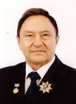
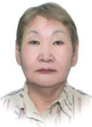

О фонде капитального ремонта многоквартирных домов Республики Саха (Якутия)
В Республике Саха (Якутия) региональный оператор создан в форме некоммерческой организации (фонда) «Фонд капитального ремонта многоквартирных домов в Республике Саха (Якутия)» (далее – Фонд).
Целью деятельности Фонда является создание безопасных и благоприятных условий проживания граждан и стимулирование внедрения ресурсосберегающих технологий, обеспечение ремонта многоквартирных домов, обеспечение качественного ремонта, отвечающего требованиям энергетической эффективности.
Имущество Фонда формируется за счет: взносов учредителя, взносов собственников помещений, других не запрещенных законом источников.
Фонд ведет учет средств, поступивших на счет, счета регионального оператора в виде взносов на капитальный ремонт собственников помещений в многоквартирных домах, формирующих фонды капитального ремонта на счете, счетах регионального оператора.
Контроль соответствия деятельности Фонда установленным законодательством требованиям осуществляется Управлением государственного строительного и жилищного надзора Республики Саха (Якутия), в порядке, установленном Президентом Республики Саха (Якутия).
Онлайн оплата
Азбука услуг ЖКХ
Подрядчикам
Для органов МСУ
Оплата
онлайн
Сбербанк
онлайн
Банковские
реквизиты для
оплаты
государственной
пошлины
Банковские
реквизиты
для оплаты
взносов
Обязанности регионального оператора
Права и обязанности регионального оператора и собственников помещений в многоквартирном доме
Во исполнение пункта 10 части 2 статьи 182 Жилищного кодекса РФ фонд капитального ремонта многоквартирных домов Республики Саха (Якутия) (далее – региональный оператор) информирует о правах и об обязанностях собственников помещений в многоквартирных домах, расположенных на территории Республики Саха (Якутия), и регионального оператора, возникающих в связи с исполнением требований Жилищного кодекса Российской Федерации (далее – ЖК РФ), иных нормативных правовых актов в сфере организации проведения капитального ремонта.
ПРАВА И ОБЯЗАННОСТИ СОБСТВЕННИКОВ
I. при формировании фонда капитального ремонтана счете регионального оператора
1.ежемесячно и в полном объеме в сроки, установленные для внесения платы за жилое помещение и коммунальные услуги, на основании платежных документов, представленных региональным оператором, обязаны вносить на общий счет регионального оператора взносы на капитальный ремонт (ч.1 ст.169; ч.1 ст.171, п.1 ч.2 ст. 181 ЖК РФ);
2.в случае несвоевременной или неполной оплаты взносов на капитальный ремонт уплачивают пени в размере одной трехсотой ставки рефинансирования Центрального банка Российской Федерации, действующей на момент оплаты, от не выплаченных в срок сумм за каждый день просрочки начиная со следующего дня после наступления установленного срока оплаты по день фактической выплаты включительно (п.1 ч.2 ст.181, ч.14.1 ст.155 ЖК РФ);
3.обязаны возместить на счет регионального оператора средства, израсходованные на капитальный ремонт общего имущества в своем многоквартирном доме, за счет последующих взносов на капитальный ремонт (ч.7 ст.182 ЖК РФ);
4.принимают решения относительно предложения, поступившего от регионального оператора, о капитальном ремонте в срок, установленный региональной программой капитального ремонта общего имущества в многоквартирных домах, расположенных на территории Республики Саха (Якутия), (п.2 ч.2 ст.181, ч.3-5 ст.189 ЖК РФ);
5.могут провести капитальный ремонт за счёт собственных средств по собственной инициативе ранее срока, установленного Региональной программой (ч.2 ст. 189 ЖК РФ);
6.по решению общего собрания, могут обратиться к региональному оператору с просьбой о зачёте потраченных на капитальный ремонт средств в счет исполнения на будущий период обязательств по уплате взносов на капитальный ремонт в случае, если проведён капитальный ремонт работ, предусмотренных Региональной программой, за счёт собственных средств собственников ранее срока, установленного Региональной программой, но не ранее срока утверждения Региональной программы, при наличии документов, оформленных в соответствии с действующим законодательством, подтверждающих факт выполнения работ (услуг) по капитальному ремонту, и если повторное проведение указанных работ в сроки, установленные Региональной программой не требуется (ч.5 ст.181 ЖК РФ);
7.по решению общего собрания, могут обратиться в комиссию, созданную органом местного самоуправления соответствующего муниципального образования для определения необходимости проведения капитального ремонта общего имущества в многоквартирных домах, с заявлением о переносе срока, установленного Региональной программой, на более ранний или более поздний (ч.4 ст.168 ЖК РФ);
8.по решению общего собрания собственников помещений в многоквартирном доме, решению членов товарищества собственников жилья, решению членов жилищного кооператива, могут направить доходы от передачи в пользование объектов общего имущества в многоквартирном доме, средства товарищества собственников жилья, жилищного кооператива, в том числе доходы от хозяйственной деятельности товарищества собственников жилья, жилищного кооператива на формирование фонда капитального ремонта в счет исполнения обязанности собственников помещений в многоквартирном доме по уплате взносов на капитальный ремонт (ч.4 ст.169 ЖК РФ);
9.участвуют в принятии любых решений по организации проведения капитального ремонта общего имущества в своём многоквартирном доме (п.2 ч.2 ст.181 ЖК РФ);
10.обязаны участвовать в осуществлении приемки оказанных услуг и (или) выполненных работ по капитальному ремонту в своём многоквартирном доме (собственники, уполномоченные решением общего собрания собственников помещений в многоквартирном доме) (п.3 ч.2 ст.181, п.5 ч.5 ст.189 ЖК РФ);
11.запрашивают и получают от регионального оператора сведения о размере уплаченных собственниками взносов на капитальный ремонт, задолженности по их оплате, о размере направленных на капитальный ремонт средств, кредитах и займах, привлеченных региональным оператором на проведение капитального ремонта общего имущества многоквартирного дома (п.4 ч.2 ст.181, ч.ч.2 -3 ст.183 ЖК РФ);
12.могут принять на общем собрании решение о прекращении формирования фонда капремонта на счёте регионального оператора и формировании его на специальном счёте своего многоквартирного дома (о переходе с общего счёта на спецсчёт) (решение вступает в силу через 1 год после направления указанного решения региональному оператору; все средства, накопленные за это время на общем счете, перечисляются в течение 5 дней региональным оператором на открытый специальный счёт) (ч.ч. 1, 5 ст.173 ЖК РФ);
13.реализуют иные права и исполняют иные обязанности, предусмотренные ЖК РФ, иными федеральными и региональными нормативными правовыми актами.
II. при формировании фонда капитального ремонтана специальном счете
1.ежемесячно и в полном объеме в сроки, установленные для внесения платы за жилое помещение и коммунальные услуги, на основании платежных документов, представленных управляющей организацией, товариществом собственников жилья, жилищным кооперативом, осуществляющими управление многоквартирным домом, или лицом, уполномоченным решением общего собрания на оказание услуг по представлению платежных документов, вносят на специальный счет взносы на капитальный ремонт (ч.1 ст.169; ч.2 ст.171, ч.3.1 ст. 185 ЖК РФ);
2.в случае несвоевременной или неполной оплаты взносов на капитальный ремонт уплачивают пени в размере одной трехсотой ставки рефинансирования Центрального банка Российской Федерации, действующей на момент оплаты, от не выплаченных в срок сумм за каждый день просрочки начиная со следующего дня после наступления установленного срока оплаты по день фактической выплаты включительно (ч.1 ст.36.1, п.5 ч.1 ст.177, ч.14.1 ст.155 ЖК РФ);
3.принимают решения о капитальном ремонте в срок, установленный Региональной программой на основании предложения, поступившего от организации или иного лица, осуществляющего управление многоквартирным домом (управляющая компания, ТСЖ, ЖК) или оказывающего услуги и (или) работы по содержанию и ремонту общего имущества в многоквартирном доме (ч.3-5 ст.189 ЖК РФ);
4.по решению общего собрания могут провести капитальный ремонт за счёт средств фонда капитального ремонта, накопленных на специальном счёте, по собственной инициативе ранее срока, установленного Региональной программой, при условии, что на дату принятия данного решения средств на специальном счете достаточно для финансирования капитального ремонта или выбраны иные способы его финансирования (ч.4.1 ст.170, ч.2 ст.189 ЖК РФ);
5.в случае недостаточности средств на специальном счёте могут принять решение об иных источниках финансирования капитального ремонта, в том числе повысить размер ежемесячного взноса (ч.2 ст.170 ЖК РФ), произвести оплату авансом, воспользоваться кредитом или займом, который в дальнейшем будет погашаться за счёт последующих взносов на капитальный ремонт (п.1.2 ч.2 ст.44, п.1 ч.5 ст.177 ЖК РФ);
6.по решению общего собрания, могут обратиться в комиссию, созданную органом местного самоуправления соответствующего муниципального образования для определения необходимости проведения капитального ремонта общего имущества в многоквартирных домах, с заявлением о переносе срока, установленного Региональной программой, на более ранний или более поздний (ч.4 ст.168 ЖК РФ);
7.обязаны принять решение на общем собрании о выборе нового владельца специального счета или об изменении способа формирования фонда капитального ремонта в случае ликвидации и (или) реорганизации, банкротства прежнего владельца специального счета, а также в случае, если управляющей организацией, ТСЖ или ЖК, являющимися владельцами специального счета, прекращено управление многоквартирным домом (решение должно быть принято и передано новому владельцу специального счета или региональному оператору не позднее чем в течение двух месяцев с даты прекращения деятельности по управлению многоквартирным домом) (ч.8 ст.185 ЖК РФ);
8.обязаны принять решение на общем собрании о выборе иного Банка для открытия специального счета в течение двух месяцев с момента получения от владельца специального счета уведомления об исключении Банка, в котором открыт специальный счет, из перечня Банков, соответствующих требованиям, установленным ч.2 ст. 172 ЖК РФ (величина собственных средств (капитала) составляет не менее чем двадцать миллиардов рублей);
9.участвуют в принятии любых решений по организации проведения капитального ремонта общего имущества в своём многоквартирном доме, в том числе, о выборе технического заказчика и подрядчика на выполнение работ (услуг) (ст.189 ЖК РФ);
10.организуют и осуществляют контроль за проведением капитального ремонта общего имущества в своем многоквартирном доме, осуществляют приемку оказанных услуг и (или) выполненных работ по капитальному ремонту в своём многоквартирном доме не позднее сроков, установленных Региональной программой (ч.6 ст.189 ЖК РФ);
11.запрашивают и получают от Банка, в котором открыт специальный счет или владельца специального счета, сведения о сумме зачисленных на специальный счет платежей собственников всех помещений в многоквартирном доме, об остатке средств на специальном счете, о всех операциях по данному специальному счету (ч.7 ст.177 ЖК РФ);
12.могут в любое время принять на общем собрании решение о прекращении формирования фонда капитального ремонта на специальном счёте и формировании его на общем счёте регионального оператора (решение вступает в силу через 1 месяц после направления указанного решения региональному оператору, но не ранее срока погашения кредита или займа, полученного на проведение капитального ремонта общего имущества; все средства, накопленные за это время на специальном счете, перечисляются в течение 5 дней владельцем специального счета на общий счёт регионального оператора) (ч.ч.1, 6 ст.173 ЖК РФ);
13.по решению общего собрания собственников помещений в многоквартирном доме, решению членов товарищества собственников жилья, решению членов жилищного кооператива, могут направить доходы от передачи в пользование объектов общего имущества в многоквартирном доме, средства товарищества собственников жилья, жилищного кооператива, в том числе доходы от хозяйственной деятельности товарищества собственников жилья, жилищного кооператива на формирование фонда капитального ремонта в счет исполнения обязанности собственников помещений в многоквартирном доме по уплате взносов на капитальный ремонт и (или) на формирование части фонда капитального ремонта сверх формируемой исходя из установленного минимального размера взноса на капитальный ремонт, которая может использоваться на финансирование любых услуг и (или) работ по капитальному ремонту общего имущества в многоквартирном доме (ч.4 ст.169 ЖК РФ);
14.реализуют иные права и исполняют иные обязанности, предусмотренные ЖК РФ, иными федеральными и региональными нормативными правовыми актами.
ПРАВА И ОБЯЗАННОСТИ РЕГИОНАЛЬНОГО ОПЕРАТОРА
I. при формировании фонда капитального ремонтана общем счете регионального оператора
1.обеспечивает проведение капитального ремонта общего имущества многоквартирных домов в объеме и в сроки, предусмотренные Региональной программой и контролирует качество и сроки выполняемых работ (услуг) (ч.1, п.4 ч.2 ст.182 ЖК РФ);
2.обеспечивает финансирование капитального ремонта общего имущества в многоквартирном доме за счет средств фонда капитального ремонта, формируемого на счете регионального оператора (ч.1 ст.190 ЖК РФ);
3.направляет собственникам помещений в многоквартирном доме предложения о сроке начала капитального ремонта, необходимом перечне и об объеме услуг и (или) работ, их стоимости, о порядке и об источниках финансирования капитального ремонта общего имущества в многоквартирном доме и другие предложения, связанные с проведением такого капитального ремонта, не менее чем за шесть месяцев до наступления года, в течение которого должен быть проведен капитальный ремонт общего имущества в многоквартирном доме (п.1 ч.2 ст.182, ч.3 ст. 189 ЖК РФ);
4.обеспечивает подготовку задания на оказание услуг и (или) выполнение работ по капитальному ремонту и подготовку соответствующей требованиям нормативных документов проектной документации (при необходимости) (п.2 ч.2 ст.182 ЖК РФ);
5.отбирает на конкурсной основе подрядные организации для оказания услуг и (или) выполнения работ по капитальному ремонту, соответствующие квалификационным требованиям, установленным порядком отбора подрядных организаций, утвержденным Правительством Российской Федерации (ч.1.1 ст. 180, п.3 ч.2 ст.182 ЖК РФ);
6.несёт ответственность перед собственниками помещений в многоквартирном доме за качество произведённых работ и услуг в течение пяти лет с момента подписания соответствующего акта приемки оказанных услуг и (или) выполненных работ, в том числе за несвоевременное и ненадлежащее устранение выявленных нарушений, путем заключения договоров подряда с условиями гарантии не менее пяти лет и устранения выявленных нарушений в разумный срок, за счет подрядчика (п.п.3, 11 ч.2 ст.182 ЖК РФ);
7.осуществляет приемку оказанных услуг и (или) выполненных работ, в том числе обеспечивает создание соответствующих комиссий с участием, в том числе, представителей собственников помещений в многоквартирном доме (п.5 ч.2 ст.182 ЖК РФ);
8.аккумулирует взносы на капитальный ремонт, уплачиваемые собственниками помещений, производя учет средств отдельно в отношении средств каждого собственника, в том числе, ведёт работу по взысканию задолженности с собственников, не производящих своевременно и полностью оплату взносов на капитальный ремонт (п.1 ч.1 ст.170, п.п.7, 8 ч.2 ст.182, ст.183 ЖК РФ);
9.применяет установленные законодательством меры, включая начисление пеней, установленных частью 14.1 статьи 155 ЖК РФ, в отношении собственников помещений в многоквартирном доме, формирующих фонд капитального ремонта на счете регионального оператора, в случае несвоевременной и (или) неполной уплаты ими взносов на капитальный ремонт (ч.4 ст.181 ЖК РФ);
10.формирует и представляет своими силами или силами третьих лиц платежные документы для уплаты взносов на капитальный ремонт по адресу нахождения помещения в многоквартирном доме (п.9 ч.2 ст.182 ЖК РФ);
11.в случае признания дома аварийным и подлежащим сносу или реконструкции направляет по решению собственников помещений средства фонда капитального ремонта соответственно на снос или реконструкцию (ст.184 ЖК РФ);
12.в случае изъятия для государственных или муниципальных нужд земельного участка, на котором расположен многоквартирный дом выплачивает собственникам помещений в этом многоквартирном доме средства фонда капитального ремонта пропорционально размерам уплаченных ими взносов на капитальный ремонт в установленном порядке (ст. 184 ЖК РФ);
13.в течение 5 дней после вступления в силу решения общего собрания собственников о переходе со счёта регионального оператора на специальный счёт перечисляет средства фонда капитального ремонта данного многоквартирного дома на открытый для этого дома специальный счёт (ч.5 ст.173 ЖК РФ);
14.может размещать временно свободные средства фонда капитального ремонта в Банке для получения доходов, при этом полученные доходы также формируют фонд капитального ремонта и не могут быть направлены на хозяйственную деятельность регионального оператора (ч.3 ст.179 ЖК РФ);
15.региональный оператор осуществляет проверку представленных документов и принимает мотивированное решение о проведении зачета стоимости ранее оказанных услуг и (или) проведенных работ по капитальному ремонту общего имущества в многоквартирном доме или об отказе в проведении данного зачета в установленных законодательством случаях (ч.5 ст.181 ЖК РФ;
16.предоставляет в Управление государственного строительного и жилищного надзора Республики Саха (Якутия) сведения о поступлении взносов на капитальный ремонт от собственников помещений и другие сведения о многоквартирном доме и фонде капитального ремонта (ч.2 ст.172 ЖК РФ);
17.возмещает убытки, причиненные собственникам помещений в многоквартирных домах в результате неисполнения или ненадлежащего исполнения своих обязательств, в размере поступивших взносов (ч.5 ст. 178 ЖК РФ);
18.осуществляет взаимодействие с органами государственной власти и органами местного самоуправления Республики Саха (Якутия) в целях обеспечения своевременного проведения капитального ремонта общего имущества в многоквартирных домах (п.5 ч.1 ст.180 ЖК РФ);
19.ежеквартально размещает на своем официальном сайте Отчет, содержащий сведения о размере начисленных и уплаченных взносов на капитальный ремонт, о размере средств, направленных на капитальный ремонт, размере задолженности за выполненные работы по капитальному ремонту, о кредитах и займах, привлеченных на капитальный ремонт (ч.2 ст. 183 ЖК РФ), по форме и в сроки, которые установлены федеральным органом исполнительной власти (ч.3.1 ст.183 ЖК РФ);
20.исполняет иные обязанности, предусмотренные Жилищным кодексом Российской Федерации, иными нормативными правовыми актами Российской Федерации, нормативными правовыми актами Республики Саха (Якутия) (п.12 ч.2 ст. 182 ЖК РФ).
II. при формировании фонда капитального ремонтана специальном счете, открытом на имя регионального оператора
В соответствии с ч.3 ст.175 ЖК РФ собственники помещений в многоквартирном доме вправе выбрать решением общего собрания регионального оператора в качестве владельца специального счета, при этом последний не вправе отказать собственникам помещений в многоквартирном доме в открытии на свое имя такого счета (п.2 ч.1 ст.180 ЖК РФ). Права и обязанности регионального оператора ограничены функциями владельца специального счета, установленными Жилищным кодексом Российской Федерации и договором специального банковского счета. Региональный оператор в этом случае не осуществляет функции технического заказчика работ по капитальному ремонту общего имущества многоквартирного дома, не ведёт работу по взысканию задолженности с собственников, не производящих своевременно и полностью оплату взносов на капитальный ремонт на специальный счет.
1.открывает специальные счета для многоквартирных домов, собственники помещений в которых выбрали регионального оператора в качестве владельца специального счёта (п.2 ч.1 ст.180 ЖК РФ);
2.выбирает на конкурсной основе (в порядке, установленном Правительством Российской Федерации) Банк для открытия специального счёта, если собственники не выбрали Банк на общем собрании или выбранный Банк не соответствует требованиям ч.2 ст. 172 ЖК РФ (величина собственных средств (капитала) составляет не менее чем двадцать миллиардов рублей) (ч.3 ст.180 ЖК РФ);
3.осуществляет контроль за соответствием Банка, в котором открыт специальный счёт, требованиям, установленным ч.2 ст. 172 ЖК РФ (величина собственных средств (капитала) составляет не менее чем двадцать миллиардов рублей) (ч.2.1 ст.176 ЖК РФ);
4.если Банк, в котором открыт специальный счет, перестает соответствовать установленным ч.2 ст.172 ЖК РФ требованиям, уведомляет в течение 15 дней с момента размещения информации Центральным банком РФ в письменной форме и с использованием системы собственников помещений в многоквартирном доме о необходимости принятия решения о выборе другого Банка, а также вправе инициировать проведение общего собрания собственников помещений в многоквартирном доме для принятия решения о выборе другого Банка;
5.предоставляет собственникам на основании письменного запроса информацию о сумме зачисленных на счет платежей собственников всех помещений в многоквартирном доме, об остатке средств на специальном счете, о всех операциях по данному специальному счету (ч.7 ст. 177 ЖК РФ);
6.совершает операции по специальному счёту, предусмотренные статьёй 177 ЖК РФ (списание по расчётам за оказанные услуги и выполненные работы, в счёт погашения кредитов, займов, зачисление взносов, пеней и т.д.);
7.предоставляет в Управление государственного строительного и жилищного надзора Республики Саха (Якутия) сведения о поступлении взносов на капитальный ремонт от собственников помещений в многоквартирном доме, о размере остатка средств на специальном счете (ч.3 ст.172 ЖК РФ);
8.в случае, если размер фактических поступлений взносов на капитальный ремонт составляет менее чем 50% от размера представленных к оплате счетов, не позднее чем в течение пяти дней после получения уведомления от Управления государственного строительного и жилищного надзора Республики Саха (Якутия) информирует в письменной форме и с использованием системы собственников помещений многоквартирном доме о их задолженности по взносам на капитальный ремонт и предпринимает меры, направленные на ее погашение, а в случае не погашения такими собственниками задолженности по взносам, инициирует проведение общего собрания собственников помещений в данном многоквартирном доме в целях принятия решения о порядке погашения задолженности (ч.ч.8, 9 ст.173 ЖК РФ);
9.перечисляет средства, находящиеся на специальном счете, на общий счет регионального оператора в течение одного месяца с момента получения решения органа местного самоуправления о формировании фонда капитального ремонта на счете регионального оператора, принятого в соответствии с ч.10 ст.183 ЖК РФ;
10.в течение 10 дней после получения соответствующего решения общего собрания собственников помещений в многоквартирном доме подаёт заявление в Банк о расторжении договора специального счета и перечислении остатка денежных средств:
oна общий счет регионального оператора в случае изменения способа формирования фонда капитального ремонта;
oна другой специальный счет в случае замены владельца специального счета или кредитной организации на основании решения общего собрания собственников помещений в соответствующем многоквартирном доме (ч.ч.4,5 ст.176 ЖК РФ);
11.исполняет иные обязанности, предусмотренные Жилищным кодексом РФ, иными нормативными правовыми актами Российской Федерации, нормативными правовыми актами Республики Саха (Якутия).
Состав попечительского совета
Персональный состав попечительского совета некоммерческой организации (ФОНДА) "Фонда капитального ремонта многоквартирных домов Республики Саха (Якутия)"
Ефимов
Яков Ананьевич
Заместитель председателя
Председатель постоянного комитета по строительству, жилищно-коммунальному хозяйству и энергетике Государственного Собрания( Ил Тумэн) Республики Саха (Якутия)
Ефремова
Катерина Васильевна
Член совета
Исполнительный директор Ассоциации "Объединение строительных организаций Восточной Сибири"
Сыромятников
Владимир Владимирович
Член совета
Директор ООО "Энергосберегающие технологии"

Горохов
Иван Иванович
Член совета
Член Общественной палаты Республики Саха (Якутия)

Покровская
Анна Павловна
Член совета
Заместитель председателя Межотраслевого совета потребителей по вопросам жилищно-коммунального хозяйства и деятельности субъектов естественных монополий при Главе Республики Саха (Якутия), руководитель общественной организации "Защита прав потребителей в сфере жилищно-коммунальных услуг"
Состав попечительского совета
Персональный состав правления некоммерческой организации (ФОНДА) "Фонда капитального ремонта многоквартирных домов Республики Саха (Якутия)"
Сивцева
Наталья Платоновна
Председатель
Директор государственного автономного учреждения Республики Саха (Якутия) "Центр развития ЖКХ и повышения энергоэффективности"
Ионин
Владимир Владимирович
Заместитель председателя
Генеральный директор некоммерческой организации (фонда) "Фонд капитального ремонта многоквартирных домов Республики Саха (Якутия)"
Сивцева
Наталья Платоновна
Председатель
Директор государственного автономного учреждения Республики Саха (Якутия) "Центр развития ЖКХ и повышения энергоэффективности"
Ионин
Владимир Владимирович
Заместитель председателя
Генеральный директор некоммерческой организации (фонда) "Фонд капитального ремонта многоквартирных домов Республики Саха (Якутия)"
Структура фонда
Структура Фонда капитального ремонта многоквартирных домов Республики Саха (Якутия)
Попечительский совет Фонда
состав определяется Правительством РС(Я)
Правление Фонда
состав определяется Правительством РС(Я)
Ревизионная комиссия
Генеральный директор
Заместитель генерального директора
по финансам и экономике
Заместитель генерального директора
по техническим вопросам
Юридический отдел
- Экспертиза НПА
- Подготовка НПА
- Заключение договоров
- Претензионная работа
- Разъяснительная работа